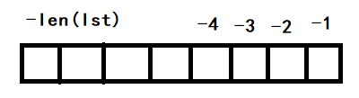

Chapter2. An Array of Sequences
从第二章开始，一直到第四章，都是在研究 Python 的数据结构。
[TOC]
Built-in Sequences
Python 中的 Sequences 按照不同 traits(特征)，可以分成很多类
分类依据: 是否为混合类型 mix-type
-
Contrainer Sequences
Demo:
list, tuple, collections.deque -
Flat Sequences
Demo:
str, bytes, bytearray, memoryview, array.array优点：节约内存，速度快，便于使用
缺点：只能存储原子数据
分类依据: 元素是否可变
-
Mutable Sequences
Demo:
list, bytearray, array.array, collections.deque, memoryview -
Immutable Sequences
Demo:
str, tuple, bytes
注意，字符串 str 也是 sequence 类型。
Summary
- Mastering the standard library sequence types is a prerequisite for writing concise effective, and idiomatic Python code.
Sequences 常用方法
| 方法 | 解释 |
|---|---|
clear() | clear all items |
__contains__() | in |
copy | shallow copy |
count | count occurences of an element |
extend | list1.extend(list2) |
index | list1.index("wansho") find position of first occurence of e |
| insert(p, e) | insert item e before the position p |
* | [0] * 5 "abc" * 5 create a new object |
pop | remove the last item or pop optional item in position p: pop([p]) |
remove(e) | remove first occurence of element e by value |
reverse() | reverse the order of items in place.(原地逆置) |
sort([key], [reverse]) | sort items in place with optional keyword arguments key and reverse |
注意，以上方法并不适用于全部的 sequence，但是都适用于 list
Slicing
所有的 sequence 都支持 slicing。
Why slices and range exclude the last item
主要原因是(排除历史原因)，sequence 都是从 0 开始索引的，所以不包含最后一个 item，有几个好处：
-
能方便地知道 range 生成的 list 和 slice 截取的长度
range(3) # 生成一个长度为 3 的list my_list[: 3] # 截取一个长度为 3 的片段 -
能方便地计算出 slice 后的 sequence 长度
my_list[3: 9] # 其长度就是 9 - 3 = 6
Slicing 技巧
s = "bicycle"
s[::3] # bye
s[::-1] # 逆序输出
s[start: stop: step]
Slice Object
如果我们想要复用一些 slice 规则，可以将规则封装成 slice object:
list1 = "abcdefg"
slice_object = slice(0, len(list1), 2)
list1[slice_object] # 'aceg'
Assigning to Slices
my_list = list(range(9))
my_list[2: 6] = [10, 20] #这条语句执行后，my_list 的第 3 到 第 6 个一共 4 个 element，会被替换成 10， 20，相当于用两个 element 替换了 4 个 element
# 删除一部分数据
my_list[2: 5] = []
# 注意：右边的赋值对象，必须是 iterable 的
负数 index

* 导致的指针混淆问题
两次相乘导致所有元素指针指向同一个内存地址
下面的两组代码，其利用 * 生成的 list 是不同的：
list1 = [["_"] * 3 for i in range(3)]
list2 = [["_"] * 3] * 3
# list1 和 list2 的打印结果是一样的，但是，其在内存中的却天差地别
list1[2][2] = "X"
print(list1)
# [["_", "_", "_"], ["_", "_", "_"], ["_", "_", "X"]]
list2[2][2] = "X"
print(list2)
# [["_", "_", "X"], ["_", "_", "X"], ["_", "_", "X"]]
# 实际上，list2 中的三个元素，在内存中是一个元素，* 3 只是 new 了 3 个不同的指针，指向了这一个元素
# 实际上，这个问题，我还没有完全搞懂，下面还有一个Demo
my_list = ["a"] * 3
my_list[0] = b
print(my_list) = ["b", "a", "a"]
# 上面这个例子，貌似证明了，只有在两次相乘的时候，才会出现这种指针混淆的问题
+= *=
+= *= 可以实现对于 mutable sequence 的 in-place 操作，具体可以看 Python-Code-Optimization.
List Comprehensions and Generator Experssion
列表推导式 listcomps 和 生成器表达式 genexps
List Comperhension(listcomp)
列表推导式的作用：to build a new list
列表推导式中变量的生效范围
在 Python 2.x 中，列表推导式中定义的临时变量会污染全局的同名变量，例如：
x = "my sweat"
my_list = [x for x in "ABC"]
print(x)
# 结果为 C
Python 3.x 对此进行了优化，
x = "ABC"
my_list = [ord(x) for x in x]
print(x) # "ABC"
print(my_list) # [65,66,67]
列表推导式中的变量，在 Python3.x 后，有了自己的作用域，即使与括号外的变量重名，也不会混淆。这使得列表推导式更像函数。
列表推导式与 map / filter
- 列表推导式可以替换 map 和 filter，任何 map 和 filter 能做到的操作，列表推导式都能做到
- 列表推导式的速度，并不比 map 和 filter 慢
Cartesian Products 笛卡尔积
列表推导式可以根据多个列表生成一个笛卡尔积，通常是两个列表。Demo:
colors = ["red", "blue"]
sizes = ["M", "S"]
tshirts = [(size, color) for size in sizes
for color in colors]
# 集合采用 {}
numbers = [1,2,3,3,4,5,5,6,6,7,7]
distinct_numbers = {number for number in numbers}
distinct_numbers
Generator Experssion (genexp)
生成器表达式的语法和列表推导式的语法几近相同，唯一的区别在于列表推导式使用 [] {}，而生成表达式使用 ()
genexp 更加节省内存，其会用 Iterator 迭代器一个接着一个地生成元素。Demo:
colors = ["red", "blue"]
sizes = ["M", "S"]
for tshirt in ("{color} {size}".format(color=color, size=size) for color in colors
for size in sizes)
相比 listcomp，genexp不会一次性把 colors 和 sizes 全部读入内存，而是一个接着一个地读取。
Tuple
读作：ta pao
Tuple 不仅仅是一个 immutable list，其更多时候充当着 record 的角色，从数据库中读取的数据，通常都放在 tuple 中。
元组的特殊定义方式:
my_tuple = 1, 2, 3, 4
# 等价于
my_tuple = (1, 2, 3, 4)
注意：
- 在 tuple 中加入 mutable 的元素，是不建议的，容易触发异常
元组加法
与 list 的 += 不同，元组相加会产生一个新的 tuple，因为 tuple is immutable
t1 = (1, 2, 3)
print(id(t1)) # 2318927351672
t1 += (4, 5)
print(id(t1)) # 2318925585576
Tuple 的两个应用场景
- 不可更改的 immutable list
- record：(经度, 纬度) (用户名, 密码)（从数据库中读取出来的数据）
Tuple unpacking 元组拆包
两种 tuple unpacking 的方式：
# 第一种
city, year, pop, chg, area = ("Tokyo", 2003, 32450, 0.66, 8014)
# list 也可以 unpacking
a, b, c = [1, 2, 3]
# 第二种
traveler_ids = [("USA", "123456"), ("CHINA", "1222")]
for passport in sorted(traveler_ids):
print("%s/%s", passport)
元组拆包性质多用于对于元素为元组的 sequence 的遍历：
# 获取每个元组的第一个元素
list1 = [(1,2,3), (3,4,5), (4,5,6)]
for a, *others in list1:
print(a)
print(others) # [2,3] [4,5] [5,6]
tuple unpacking 的一个优雅的应用：交换两个数的值
a, b = b, a
# 实际上，右边的 b, a 是一个元组，将右边的元组 unpack 到左边
注意，当我们想要获取 tuple 的元素时，对其进行 unpacking 是最快速的方式。* 可以帮助我们更方便的 unpacking，忽略不重要的字段，保留我们想要处理的字段，例如：
tuple1 = 1,2,3,4,5
a, *b, c = tuple1
print(a, c) #
* 的 unpacking 属性，多用于函数的参数定义
Relative Immutability of Tuples
Tuple 并不是完全 immutable 的，我们可以看一下这个例子：
t1 = (1, 2, [1, 2])
t1[2].append(3)
t1
(1, 2, [1, 2, 3])
hash(t1) # 不可 hash
Traceback (most recent call last):
File "<input>", line 1, in <module>
TypeError: unhashable type: 'list'
NamedTuple
collections.namedtuple 可以帮助我们创建一个带有字段名的 tuple（数据结构类似于两个 tuple，一个放字段名，一个放对应的值）。
from collections import namedtuple
City = namedtuple("City", "name country population coordinates") # 创建了一个 City 类
# namedtuple 需要传入两个参数，第一个参数是 classname, 第二个参数是 a list of field names, 也可以传入带空格的字符串, 注意：通常类命要大写
tokyo = City("Tokyo", "JP", 36.3, (35.789772, 139,691667))
# 通过 字段名 或者 position 获取字段值
print(tokyo) # City(name="Tokyo", country="JP", population=...)
print(tokyo.name) # Tokyo
print(tokyo.country) # JP
print(tokyo[0]) # Tokyo，这个特性更像是 tuplej
namedtuple 的使用场景：
- 用来快速创建一个只包含属性（不包含方法）的类
- 存储从数据库中读取的数据。
namedtuple的几个属性和方法：
tokyo._fields # 返回字段列表
tokyo_data = ("Tokyo", "JP", 36.3, (35.789772, 139,691667)
tokyo = City._make(tokyo_data) # generate a element
dummy variable 虚拟变量
import os
_, filename = os.path.split("/home/work/test.h")
print(filename) # test.h
# 其中 _ 就是一个虚拟变量，其更多时候充当一个占位符的角色，可以是任何字符串
* 号的作用
-
unpacking tuple or str for positional arguments: 将 tuple 解包用于位置参数
t = (20, 8) divmod(*t) # 注意 divmod 必须传入两个参数，如果我们不加 t，那么只会传入一整个 tuple，这样就会报错 # 等价于 divmod(20, 8) '{2}, {1}, {0}'.format(*'abc') # 'c, b, a' -
用于定义一个可以接受任意多个位置参数的函数
def add_list(*params): sum = 0 for num in params: sum +=num print(sum) add_list(*(1,2,3)) # 等价于 add_list(1, 2, 3) -
use * to grap excess items
a, b, *rest = range(5) # 0, 1, [2, 3, 4] a, b, *rest = range(2) # 0, 1, [] a, *body, b, c = range(5) # 0, [1, 2], 3, 4 *head, a, b, c = range(5) # [0, 1], 2, 3, 4
enumerate() built in function
enumerate() 接收一个 Iterative Sequence，生成一个包含 index 的生成器，生成器生成的元素是 tuple (index, sequence[index])，其常见的 Demo 为：
for index, value in enumerate(["a", "b", "c"]):
print(index, value)
str 字符串
字符串本质上也是 sequence，其可以通过 for 循环进行遍历
字符串遍历
for ch in "test":
print(ch)
字符串拆成字符数组
char_list = list("test")
# ['t', 'e', 's', 't']
list.sort 和 sorted
list.sortsort a list in place — that is, without making a copy.
list.sort 是一个 in-place function，返回一个 None，表示其并不会创建一个新的 list.
sorted(list1) 则会创建一个新的 list 并返回；并且 sorted 可以对所有可迭代的对象进行排序操作，而 list1.sort() 只能对 list 进行排序。
list.sort 和 sorted(list) 都有两个共同的关键词参数: reverse=True/False key=function
Demos:
fruits = ["grape", "raspberry", "apple", "banana"]
sorted(fruits, reverse=True, key=len)
manage ordered Sequences with bisect（二分排序）
bisect 经常用于动态的维护一个有序的列表，其作用对象是有序的列表，其本质上是对二分查找算法的封装。其主要作用有两个：
- 利用二分查找，在有序表中 快速查找 到要插入的数字应该被放置的位置
bisect.bisect(sorte_list, to_insert_num) - 利用二分查找，在有序表中 快速插入 一个对象
import bisect
sorted_list = [1,2,3,4,5]
bisect.bisect(sorted_list, 1) # 返回 1，表示 1 应该插入到 sorted_list[1] 的位置，其余元素顺延
bisect.insort(sorted_list, 4) # 往 sorted_list 插入一个数字，并保持有序，注意是 insort
注意：bisect 只对按照正序排序的列表生效，也就是所 sorted_list 必须是正序的。
涉及到排序的问题，都可以使用内置标准模块： bisect
array.array
array 是设计用来专门处理数值类型的的 sequence，其在处理数值型数据的效率，要远远高于 list，其兼容 mutable sequence 的一切特性，还支持快速加载和存储，但并不是混合型类型（mixed-type）的 sequence。array 之所以效率高，是因为其底层就是 C 的数组。
所以，当我们需要进行数值运算的时候，我们应该使用 array.array。Demo:
from array import array
from random import random
# 用生成表达式生成一个双精度的 float 类型 array, 其中包含有 1000 万个元素
# array 接受两个参数，第一个参数是存储的数据类型，第二个参数是存储的数据
# array 目前接受的存储类型为：
# I: integer 整形
# u: unicode 类型
# d: double 类型
# others: ……
floats = array("d", (random() for i in range(10**7))) # 此处用生成器的好处在于，我们并不会直接生成一个 10**7 长度的数组，这样的话，相当于占用了 double 的内存，而改用生成器的话，在生成 array 的时候，就不需要占用多余的内存，因为元素是一个一个生成的。
print("the last number: " + str(floats[-1]))
fw = open("array.bin", "wb")
floats.tofile(fw) # 讲数据写入二进制文件中
fw.close()
# 构建一个空的 array，然后从二进制文件中读取数据
floats2 = array("d")
fr = open("array.bin", "rb")
floats2.fromfile(fr, 10**7) # 读取的时候，指定读取多少个数据
fr.close()
print("the last number: " + str(floats2[-1]))
# 并不是共用内存，当时内容相同
print(id(floats))
print(id(floats2))
print(floats == floats2) # true
array 的优点：
- 底层数据结构为 C 的 array，占用内存小
- 可以将 array 写入到二进制文件中，速度非常快，而且占用的磁盘空间小。写入的速度大概是 write per line with float 的 7 倍，读取数据的速度大概是 read from txt per line 的 60 倍
另一个和 array.array 速度几近相同的模块，是 pickle 模块。
注意：Python3 并没有对于 array 的 in-place sort 方法，对于 array 的 sort 的正确做法是使用 sorted：
a = array.array(a.typecode, sorted(a))
如果我们想要动态维护一个 sorted array 的话，还是要用到 bisect。
Numpy and SciPy
Numpy == Numerical Python 读作 num + py (nangpai)
当我们需要对数字类型的 sequence 进行复杂的操作时，例如向量的分解，向量的乘除法时，就需要用到 Numpy。Numpy 是 SciPy 和 Pandas 的基础。
SciPy 是基于 Numpy 的一个库，其提供了更多关于线性代数/数值计算和统计的工具，其底层调用的是 C 和 Fortran 的库。
Deques
双端队列，使用情景：只对 sequence 的两端进行操作。
用 list 实现栈和队列：
通过对 list 进行 .append() 和 .pop(index)，我们可以实现栈或队列。例如，我们可以通过如下的方法，实现一个队列：
queue = [1,2,3,4]
queue.append(5) # 入队
queue.pop(index=0) # 出队
但是用以上的方法实现队列，有一个很大的问题：每一次出队，queue 中所有的元素，都要往前移一位，时间复杂度是 O(n)。
Python 的标准库自带了一个 双端队列 的实现：collections.deque，collections.deque 是一个线程安全的双端队列，其被设计用来快速的在双端进行插入和删除。deque 还有一个特性，当一端的插入导致队列满了后，deque会抛弃另一端的数据。
Demos:
from collections import deque
dq = deque(range(10), maxlen=10) # 初始化一个 双端队列，可以不给出 maxlen
print(dq) # deque([0, 1, 2, 3, 4, 5, 6, 7, 8, 9], maxlen=10)
# rotate(n) 当 n > 0 时，其功能为从 deque 的右边取出 n 个数，移动到左边，当 n<0时，其功能为从左边取出 -n 个数，移动到右边
dq.rotate(3)
print(dq) # deque([7, 8, 9, 0, 1, 2, 3, 4, 5, 6], maxlen=10)
dq.rotate(-4)
print(dq) # deque([1, 2, 3, 4, 5, 6, 7, 8, 9, 0], maxlen=10)
# 从左端插入，append() 是默认右端插入
dq.appendleft(-1)
print(dq) # deque([-1, 1, 2, 3, 4, 5, 6, 7, 8, 9], maxlen=10)
# 默认从右端扩展
dq.extend([11,12,13,14])
print(dq) # deque([4, 5, 6, 7, 8, 9, 11, 12, 13, 14], maxlen=10)
# 从左端扩展，要注意的是，extendleft 是 iterate 的操作，所以插入后是逆序的
dq.extendleft([10,20,30,40])
print(dq) # deque([40, 30, 20, 10, 4, 5, 6, 7, 8, 9], maxlen=10)
# 双端弹出数据的操作，
dq.pop() # 右端弹出数据
dq.popleft() # 左端弹出数据
collections.deque 实现了 list 的大多数方法，并且对双端的插入和删除进行了优化，但是需要注意的是，删除 deque 的中部的数据，会是比较耗时的操作。另外，deque 不支持 pop(index) 的操作，因为 index 对于 deque 并没有意义，其双端的 index 都是不固定的。